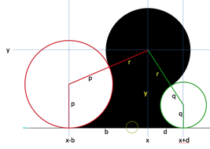
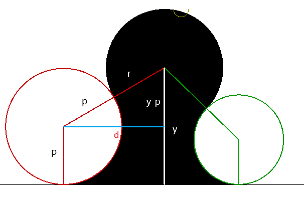
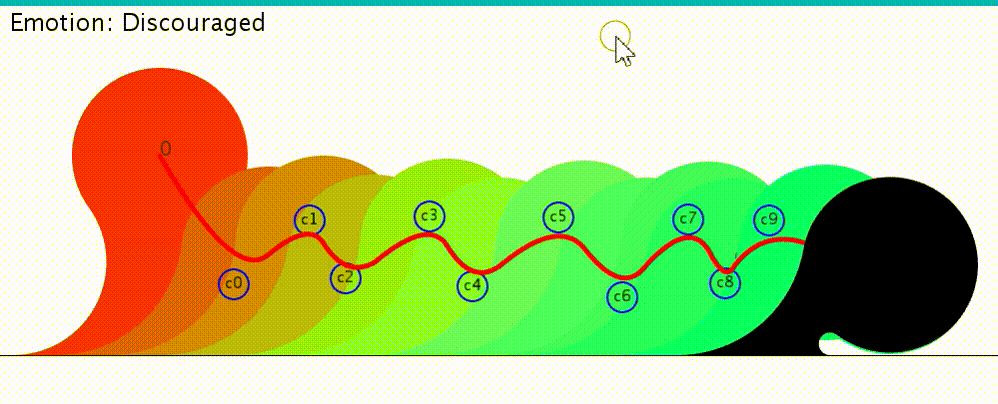
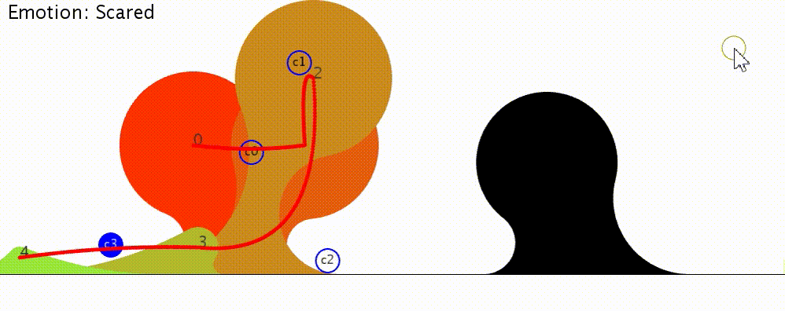
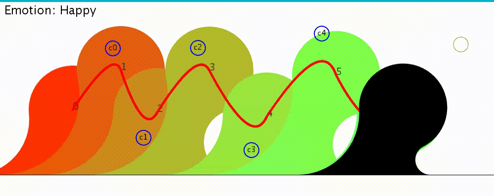

Austin Passmore Seunghwan Lee
ABSTRACT
The first goal of this project
is to create and implement principles and algorithms that create smooth, interpolating,
expressive, and aesthetically pleasing animations of a simple and parameterized,
smooth and planar shape that is bounded by three circular arcs. We present (1) the
shape parameterization, (2) the math for computing automatically its blending
arcs, (3) the broad principles for creating animations that are aesthetically
pleasing, (4) the broad principles for creating animations that express
specific emotions, (5) noteworthy details of our implementation, (6) experimental
results, (7) strengths and limitations of our solution, and (8) suggestions for
experimental validations and for further experimental research.
1 Shape parameterization
The shape,
S, is defined as the union of a ÒheadÓ
represented by a disk with center (x,y)
and radius r and a ÒneckÓ that smoothly
connects the head to the floor and is hence delimited by two ÒblendsÓ (circular arcs), each tangent
to the head perimeter and to the floor. The blending arcs are tangent to the
floor at contact points with coordinates x-b and x+d.
In the
typical configuration (below), S is the figure shaded in black. It is bounded
by the ÒbaseÓ (a straight horizontal
edge that slides on the floor) and by three smoothly connecting circular arcs
(one for the head and two for the neck).

The shape parameters
that are set, at each frame of the animation, by the animation controller are:
x, y, r, b, and d. Intuitively, x and y control the head position, and r
controls its size. Parameters b and d control the possibly asymmetric thickness
of the neck at the base and hence may be used to convey the impression that the
neck and head are tilted.
The blend radius
parameters, p and q, are computed automatically, as explained below.
2 Computing the blending arcs
The centers
of the blending circles (shown in red for left and green for right) have
coordinates (x-b,p) and (x+d,q).
We provide below
the derivation of the expression for the value of p from values of b, y and r.
Notice that there is a triangle consisting of three side: (y-p), (r+p), and b.
By Pythagoras theorem, (y-p)2 + b2 = (r+p)2
We want to solve it for p
Hence p = (y2 + b2 - r2) / (2 * (r + y))
We implemented
this computation by a call to
p=blendRadius(b,y,r);
which we
have implemented as follows :
float blendRadius(float b, float y, float r) { return (y * y + b * b - r * r) / (2.0 * (r + y)); }
By symmetry,
parameter q is computed using
p=blendRadius(d,y,r);
Results are shown below

The principles we use for creating aesthetic animations come from Walt Disney's Twelve Basic Principles of Animation. For the aesthetics of the animations, we focus on the principles: "Arc", "Ease In and Ease Out", and "Timing"[1]. Arc - most motions tend to follow a curve which creates smoother, more fluid animations. Ease in and Ease Out - the speed of a motion should accelerate from rest to a max speed and then decelerate to zero as the motion ends to create smoother, more natural animations. Timing - the frequency of frames for a motion as time progresses needs to change to show the speed of the motion changing; this makes the animations look smooth and realistic. The following link is to a video explaining the Twelve Basic Principles of Animation: https://youtu.be/yiGY0qiy8fY The principles we use for creating expressive animations come from Walt Disney’s Twelve Basic Principles of Animation. For the expressiveness of the animations, we focus on the principles: "Squash and Stretch", "Pose to Pose", and "Exaggeration".
Squash and Stretch - objects squash or stretch the formation of their body depending on the direction of the force being applied to them while keeping the area/volume of their body constant; this principle can give drawings a sense of weight as their bodies react to these forces. Pose to Pose - the animation contains a few main extreme poses and the frames in between are determined based off of those poses; this principle is useful when working with emotional animations. Exaggeration - some motions in an animation are made to be wilder than they would be in reality; this principle is useful when wanting to convey strong emotions or important motions. Our implementation went in a different direction than code that was provided to us. Initially, we were given the initial and final shapes of our character, at t=0 and at t=5 seconds. We believed that this set up that was provided to us limited movement and lead to oversimplified animations, thus making it difficult to express something as complex as an emotion while also creating aesthetic animations. Therefore, we first provide below the high level description of our alternate approach. Then, we discuss several noteworthy details, explaining what they accomplish, showing we implemented them, and providing the mathematical derivation of the formulae used.
Overview Our implementation uses a keyframe system to block out the animation. Between keyframes, a quadratic Bezier curve is constructed to guide the x and y position of the character throughout the animation. KeyFrames
1. While the character is not animating, the character’s shape parameters can be edited based off of mouse drag. Exact shape parameters can be stored as a keyframe.
2. The use of keyframes allows for more complex animations that can be more expressive, based off of the Pose to Pose principle, and prevents the entire animation from having to be derived mathematically. Bezier Curve[2]
1. For each pair of keyframes, a Bezier curve is constructed from the position of the center of the head from the start keyframe to the end keyframe.This is accomplished using a single control point for each curve.
2. Initially the control point is generated based off of the x and y positions of the start and end keyframes, but each control point can be edited based off of mouse drag to obtain more desirable curves.
3. Using a time variable, t, that begins at t=0, ends at t=1, and is incremented by t+=0.01, a curve is constructed by performing a linear interpolation from the start keyframe to the control point to calculate a point, a, and also from the control point to the end keyframe to calculate another point, b. Another linear interpolation from point a to point b is performed to result in a point along the Bezier curve for each time step of t. The character follows along these points between keyframes. Our linear interpolation function looks like this: point=a+(t*(b-a)).
4. When we first implemented keyframes, the character moved between them in a straight line. This made the animation look mechanical, produce jerking transitions at keyframes, and ultimately limited the movement of our character.
5. The use of Bezier curves allows the character to move in an arc and meet the Arc principle of animation. By moving the control points, the tangents of curves can be made approximately equal at where they meet to produce smooth transitions at keyframes. Linear Interpolation of Shape Parameters[2]
1. The other shape parameters (b, d, and r) are updated between keyframes using a linear interpolation: parameter=startParameter+(sin2(t*PI/2)*(endParameter-startParameter)).
2. By using a sin2() function of time opposed to a linear function, there is an acceleration and deceleration in the change of the shape parameters between keyframes. This creates a smoother transition of the shape parameters and follows the Ease In and Ease Out principle of animation. Controlling Speed
We update our time parameter, t, by a speed variable opposed to a set incrementation. By adjusting the speed variable, we are able to easily control the speed for different animations and for movement between keyframes. This allows us to make very precise and expressive animations. We show
results for several emotional targets using a stroboscopic superposition of consecutive
frames. For each, we comment on how the principles described above have been
used to enhance aesthetics and emotion. We encourage the reader to check the
corresponding short video segments included with the project. Discouraged: Here we can see that the position of the head is set low to the ground and the value for d is low to simulate the appearance that the character’s head is drooping to the right. The character stays low to the ground throughout the animation. We adjust the speed of the rise of the character’s walking animation to be very slow and the speed of the fall of their walking animation to be slightly faster to simulate that the character’s discouragement has put such a weight on his emotions that it is causing him to move in this sluggish way.  Scared: Here we can see how the principle of Exaggeration is used to convey an extreme emotion. As the character turns, they notice something frightening indicated by their increase in height and head size, The alerted motion happens very quickly at a speed faster than the head turn. The character’s head size then shrinks down to a very small amount and smoothly moves closer to the ground at a high speed as they move in the opposite direction. This conveys the emotion of intense fear as the character seems to hide and flee.  Happy: Here we can see that the position of the head is set low to the ground and the value for d is low to simulate the appearance that the character’s head is drooping to the right. The character stays low to the ground throughout the animation. We adjust the speed of the rise of the character’s walking animation to be very slow and the speed of the fall of their walking animation to be slightly faster to simulate that the character’s discouragement has put such a weight on his emotions that it is causing him to move in this sluggish way.  From our
experimental results, we conclude that the strengths of our approach include
the following: 1. The use of keyframes and Bezier curves with adjustable control points allows us to produce precise and complex animations. 2. Smooth, circular motions by use of Bezier curves. 3. Easily controlled speed of animations. As key
drawbacks, we observed the following: 1. By using only one control point when constructing each Bezier curve, we are only able to make U-shaped curves, when there are moments when an S-shaped curve would be more useful and aesthetic. 2. No tool was created for adjusting the speed of the animation and it can only be accomplished by editing the program’s code. To validate such
ideas more formally, we suggest the following experimental set-up: 1. Randomly create two keyframes by pressing ‘k’. 2. To validate Bézier Curve, press ‘m’ and move around your mouse to .change control point value while pressing ‘z’. 3. Play the animation by pressing ‘a’. 4. You can confirm the idea of Linear Interpolation of Shape Parameters and Bezier Curve by watching how the object is moving. To improve
our solution, we suggest to use more control points for cubic or higher-degree Bezier curves to create more complex and aesthetically pleasing curves between keyframes. [1] Thomas, F., & Johnston, O. (1981). Disney animation : The illusion of life (1st ed. ed.). New York: Abbeville Press. [2] Lectures slides provided by Jarek Rossignac at Geogia Institute of Technology for CS 4803 - Computational Aesthetics3
Principles for creating aesthetic animations
4
Principles for creating expressive animations
5
Noteworthy details of our implementation
Their placement on the floor is given by values x0 and x1 implying that x(0) = x0 and x(5) = x1. It was assumed that the shape is stationary at the beginning (t=0) and at the end (t=5) of the animation.
By "stationary", we mean that all derivatives of all control parameters are 0 at these times. Hence, the shape would accelerate at the beginning and decelerate at the end.
The other shape parameters (b, d, and r) are calculated by performing a linear interpolation between keyframes.
Finally, different speeds during an animation are controlled by incrementing our time variable, t, by different amounts.
6
Experimental results
7
Strengths and limitations
8
Suggestions for validation and further research
9
References
cited
10
Extension for graduate students